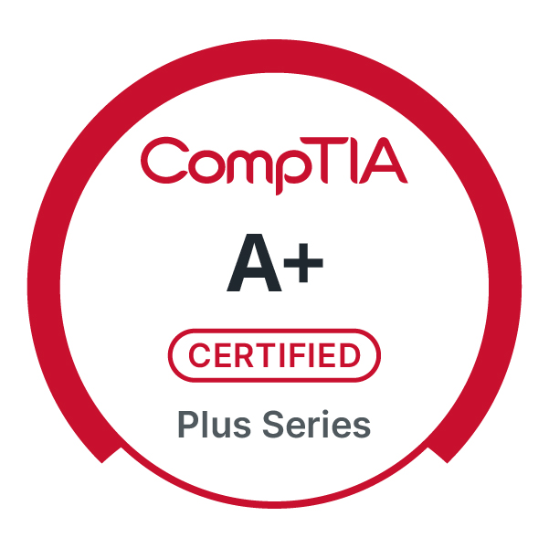
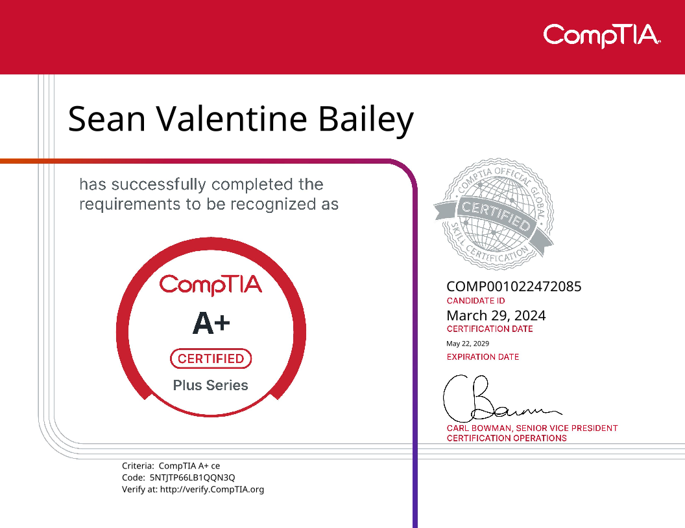
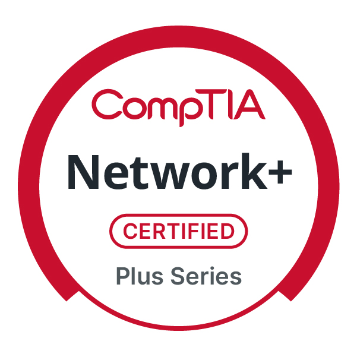
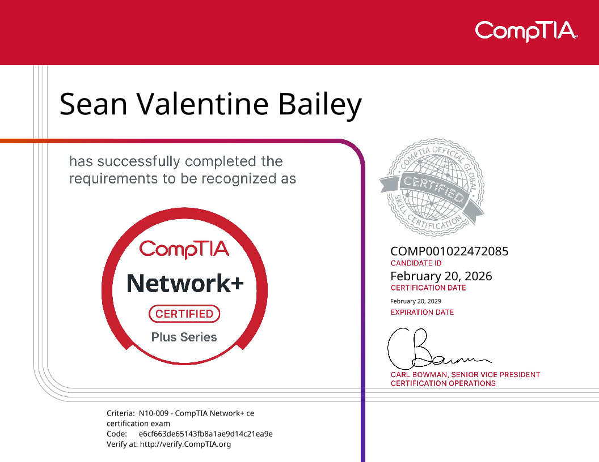
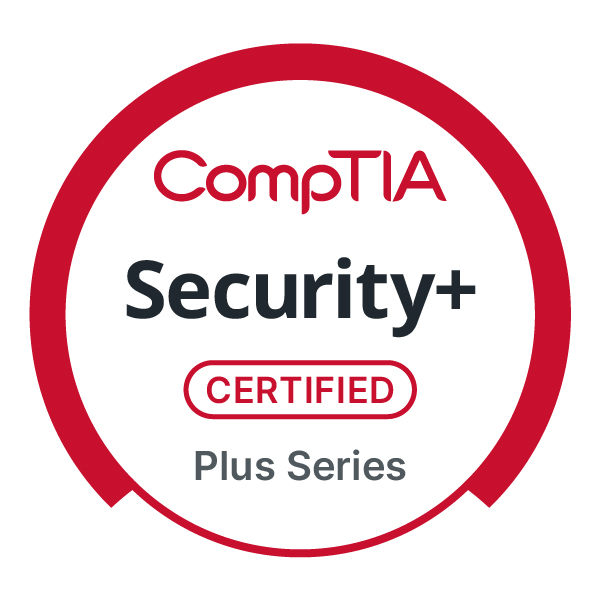
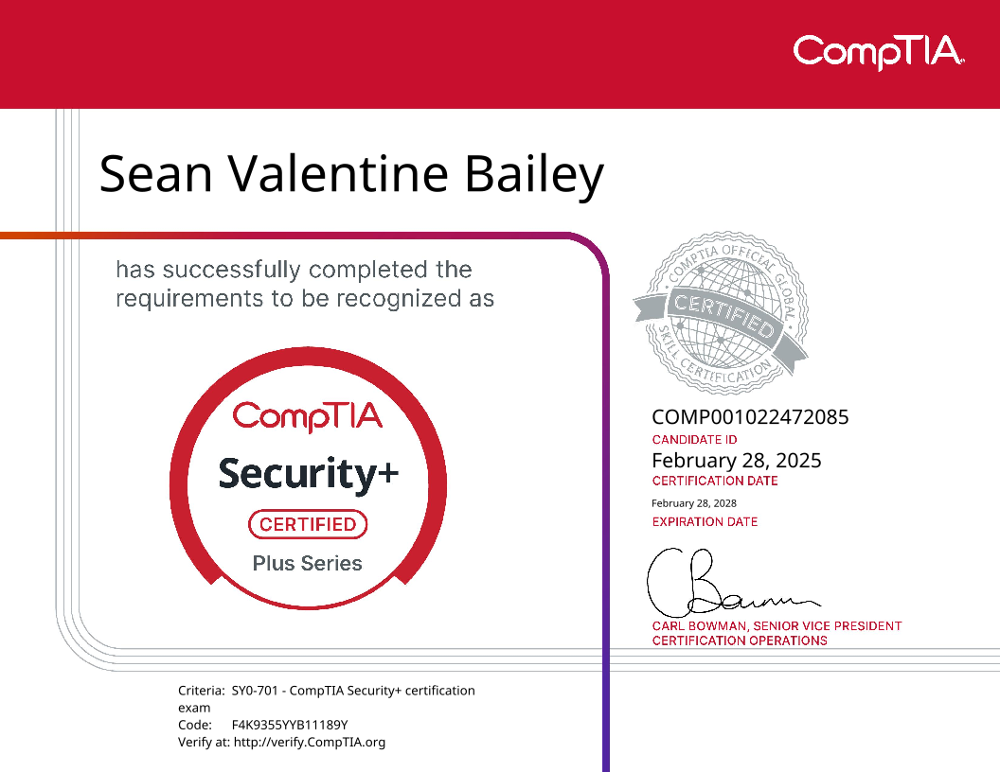
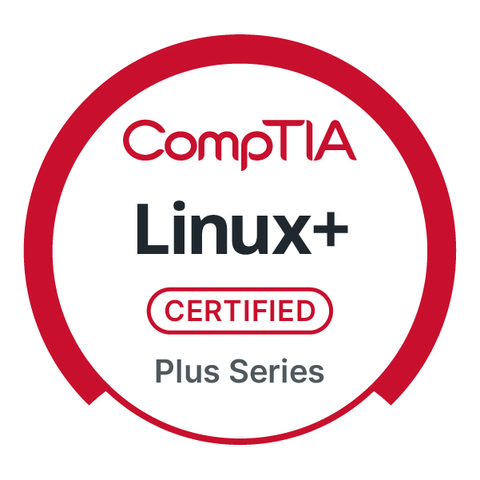
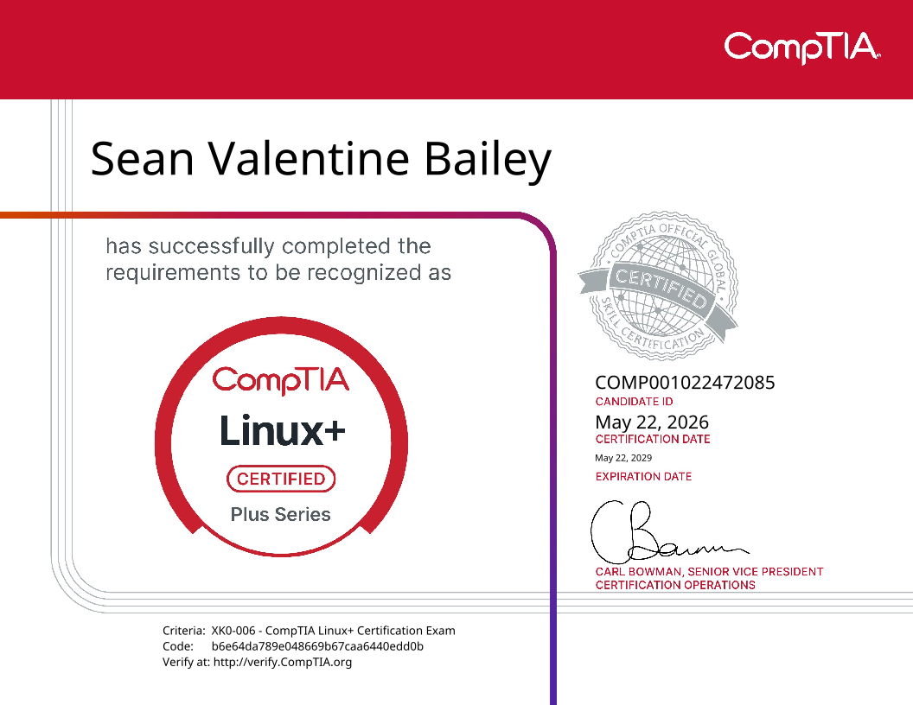

Identity & Windows Server
- Windows Server 2025
- Active Directory Domain Services
- Windows DNS
- User & Group Management (RBAC)
- Domain Authentication
IT Infrastructure · Systems Administration · Cybersecurity
Technology Services Specialist II at Florida SouthWestern State College. I combine 20+ years of frontline IT support with hands-on homelab experience in Proxmox, Windows Server 2025, Active Directory, and Docker, working toward roles in systems administration, IT infrastructure, and cybersecurity.
I'm an IT professional with a B.S. in Computer Information Systems from Bethune-Cookman University and the full CompTIA Secure Infrastructure Specialist (CSIS) stackable certification — A+, Network+, Security+, and Linux+.
Day-to-day, I support hardware, software, and end-user technology in an educational environment. Outside of work, I run a self-hosted homelab to strengthen my skills in virtualization, Windows Server administration, identity and access management, Linux, and containerization.
I'm especially interested in opportunities involving systems administration, IT infrastructure, cybersecurity, and network operations — building secure, reliable, and efficient technology environments.
Grouped by discipline. All skills reflect either certifications earned or hands-on homelab and workplace use.
Hands-on work from my self-hosted lab and portfolio projects. Each project links to the source repository where available.

Click to view certificate


Click to view certificate


Click to view certificate


Click to view certificate

Open to opportunities in systems administration, IT infrastructure, cybersecurity, and network operations.